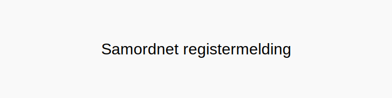

Samordnet registermelding er en enhetlig digital rapport som samler alle krav til lønns- og arbeidsforholdrapportering for arbeidsgivere til én melding. Dette konseptet, også kjent som A-melding eller del av A-ordningen, forenkler rapporteringsprosessen og sikrer bedre datakvalitet mellom sentrale etater som Skatteetaten, NAV og SSB.

Se også: Skjemafobi.
Hva er samordnet registermelding?
En samordnet registermelding erstatter flere tidligere, separate rapporteringsskjemaer med én månedlig digital innsending. Målet er å effektivisere rapportering, redusere administrative byrder og sikre konsistens i data som brukes av offentlige instanser.
Historikk og bakgrunn
Før innføringen av samordnet registermelding måtte bedrifter sende flere ulike rapporter med forskjellige frister:
| Tidligere rapport | Mottaker | Frekvens |
|---|---|---|
| Lønns- og trekkoppgave (LTO) | Skatteetaten | Årlig |
| Terminoppgave arbeidsgiveravgift | Skatteetaten | Annenhver måned |
| Terminoppgave forskuddstrekk | Skatteetaten | Annenhver måned |
| Melding til Aa-registeret | NAV | Ved endring i arbeidsforhold |
| Lønnsstatistikk | SSB | Til utvalgte bedrifter |
Ved å samle disse i én samordnet registermelding reduseres antall skjemaer og rapporteringsrutiner betydelig.
Hvem må levere?
Plikten til å levere samordnet registermelding gjelder i utgangspunktet alle som utbetaler lønn eller ytelser til ansatte eller andre mottakere. Dette inkluderer:
- Foretak og organisasjoner uavhengig av størrelse.
- Private arbeidsgivere, for eksempel ved ansettelse av familietjenester.
- Frivillige og ideelle organisasjoner med lønnsutbetalinger.
Innhold og struktur
En samordnet registermelding består av:
- Virksomhetsinformasjon: Organisasjonsnummer, virksomhetsnavn og betalingsinformasjon.
- Arbeidsforhold: Start- og sluttdato, stillingsprosent og type arbeidsforhold (fast, midlertidig, mv.).
- Inntektsdetaljer: Skattepliktig lønn, variabel tillegg, naturalytelser og feriepenger.
- Skattetrekk og arbeidsgiveravgift: Beregnet forskuddstrekk og grunnlag for arbeidsgiveravgift.
For en dypere teknisk beskrivelse, se vår komplette guide: Hva er a-melding?.
Fordeler med samordnet registermelding
- Redusert administrasjon: Én melding, én frist og én innsendingskanal (Altinn).
- Bedre datakvalitet: Konsistente og oppdaterte opplysninger for alle etater.
- Raskere saksbehandling: NAV, Skatteetaten og SSB får data umiddelbart.
- Økt etterlevelse: Mindre risiko for avvik og sanksjoner ved forsinkelser eller feil.
Hvordan levere?
Leveranse av samordnet registermelding kan gjøres gjennom:
- Integrert lønnssystem: De fleste moderne økonomisystemer genererer automatisk rapporten og sender den til Altinn.
- Altinn-portalen: Manuell innsending for virksomheter med enklere behov.
Les også
Relaterte ord
- A-melding
- A-ordningen
- Opplysningsplikt
- Arbeidsgiveravgift
- Forskuddstrekk